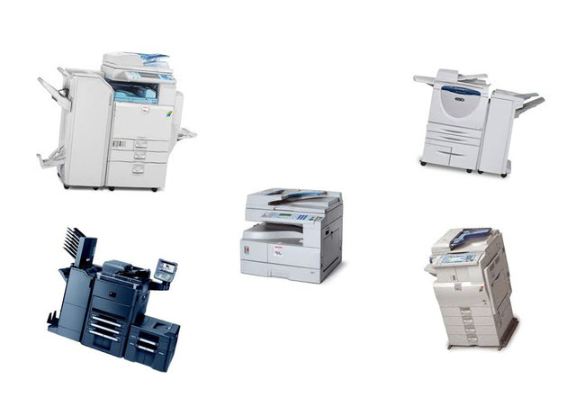

Vendre du matériel de qualité est le soucis permanent de MOUNS COPY; c'est pourquoi nous avons créé un atelier spécialisé où chaque machine est testée et nettoyée,accessoires inclus. Un test copie effectué par la machine est laissé en vue ainsi qu'une fiche indiquant les caractéristiques (accessoires, nombre de copies) et les initiales du technicien qui l'a préparé.
Pour la vente au détail ,vous bénéficiez d'un an de garantie pièces et main d'oeuvre.Vous avez aussi la possibilitè d'avoir un contrat de maintenance.
Pour notre clientèle à l'exportation,pouvoir acheter des photocopieurs d'occasion en totale confiance est très important.
Chez MOUNS COPY vous trouverez cette tranquillité car les problèmes de nos clients sont nos problèmes.
Les collaborateurs de MOUNS COPY se tiennent à votre disposition pour tout renseignement complémentaire.